Made in EU
Entwickelt in Europa, für Europa. Fahrplandaten aus offenen europäischen Quellen, ohne Umweg über große Plattformen.
Für iPhone, Apple Watch und Android
Publit plant deine Reise mit Bus, Bim, U-Bahn und Zug über Ländergrenzen hinweg und begleitet dich bis zum Aussteigen. Kostenlos, ohne Konto und ohne Werbung.
Sie vertreten ein Verkehrsunternehmen oder einen Verbund? So arbeiten wir zusammen →


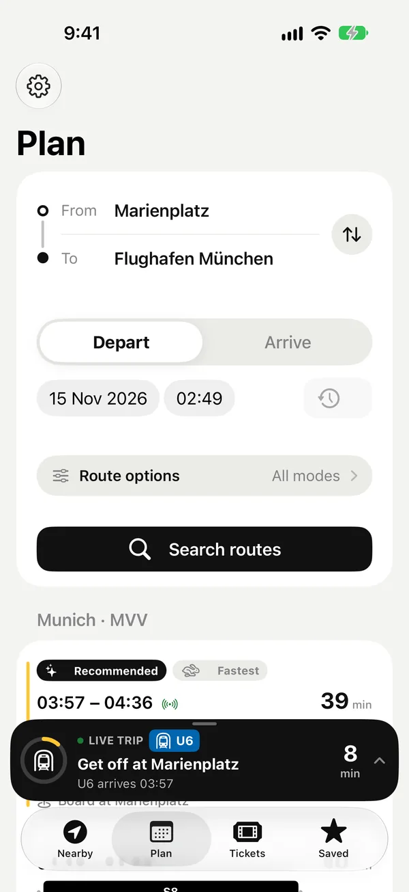

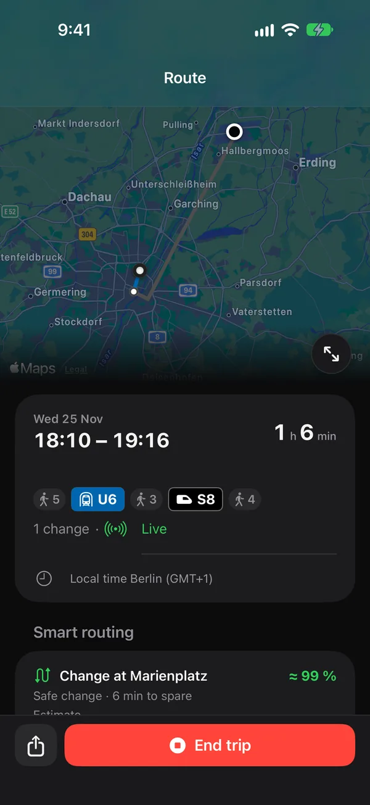
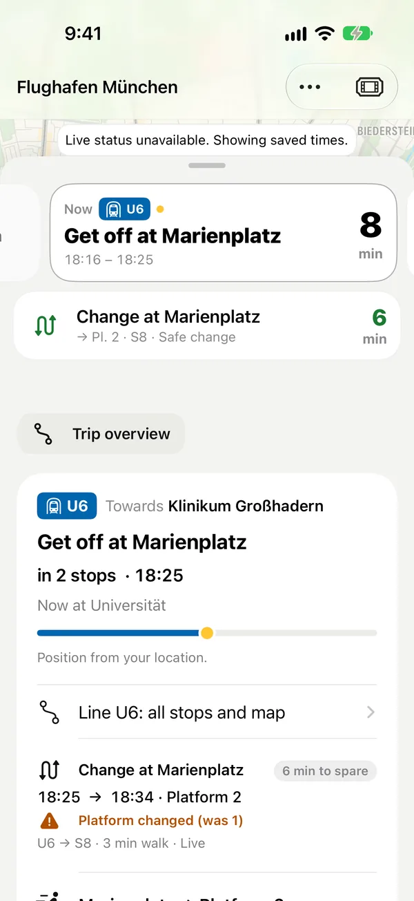
Die Idee
In Wien brauchst du eine App, in München die nächste und für den Zug nach Venedig eine dritte. Das ändern wir: In Publit suchst du die Verbindung und kaufst das Ticket des Verkehrsunternehmens gleich dazu. Publit verkauft dabei im Auftrag der Verkehrsunternehmen, das Ticket kommt von ihnen.
Stand heute: Route, Live-Fahrt und das Ablegen eigener Tickets funktionieren. Der Kauf in der App startet nach und nach, ein Verkehrsunternehmen nach dem anderen.
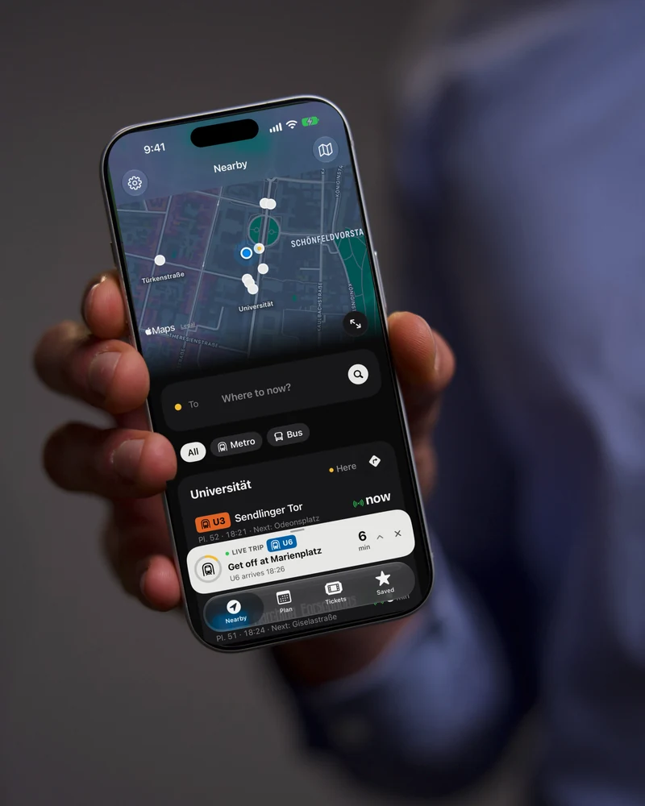
Publit soll mehr werden als ein Fahrplan. Das ist die Richtung für die nächsten Jahre, Schritt für Schritt und gemeinsam mit den Verkehrsunternehmen.
Das ist die Richtung, nicht der heutige Stand. Was die App schon kann, steht weiter unten bei den Funktionen.
01
Öffne Publit und sieh sofort die nächsten Abfahrten um dich herum: Linie, Richtung, Steig und die Minuten bis zur Abfahrt. Live-Zeiten und Verspätungen stehen direkt daneben.
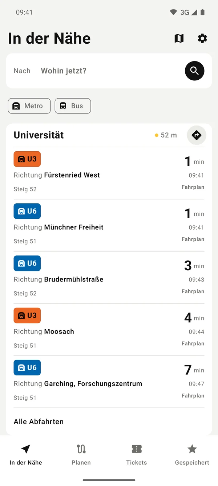
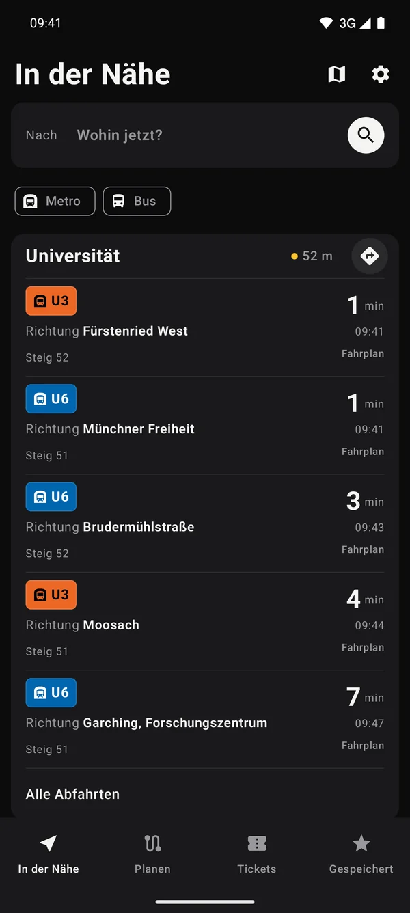
02
Publit legt jede Verbindung auf dieselbe Zeitachse. So siehst du auf einen Blick, welche früher ankommt, wo du umsteigst und wo es knapp wird.
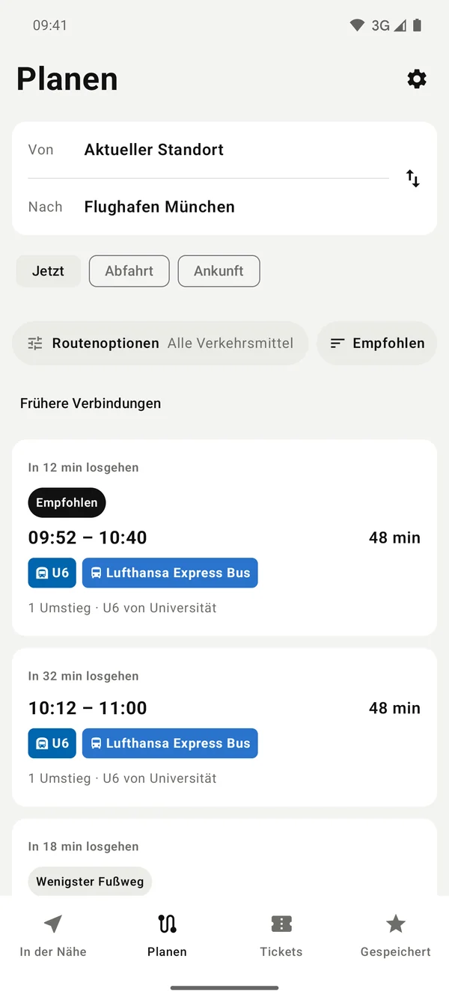
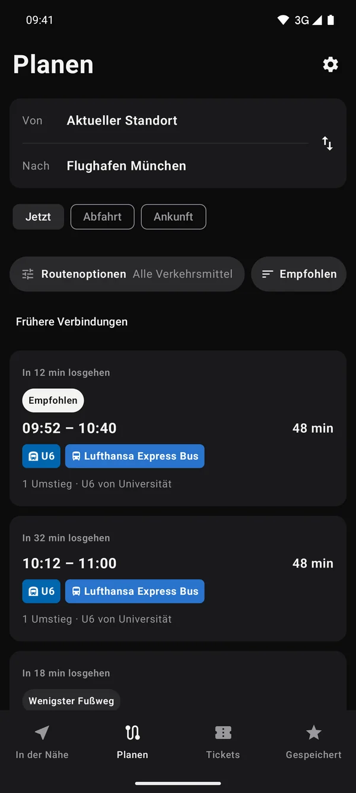
03
Jede Route zeigt oben, wann du losgehen musst und wann du ankommst. Darunter stehen die Karte und alle Schritte in den Farben der Linien, mit Steig, Haltestellen und Verspätungen.
04
Während der Fahrt zeigt Publit groß an, welche Linie du nimmst, wie lange es noch dauert und wo du aussteigst. Verspätungen und Gleiswechsel siehst du sofort, auch auf dem Sperrbildschirm und in der Dynamic Island.

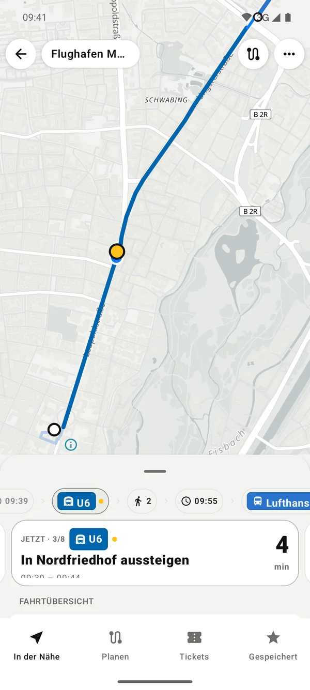
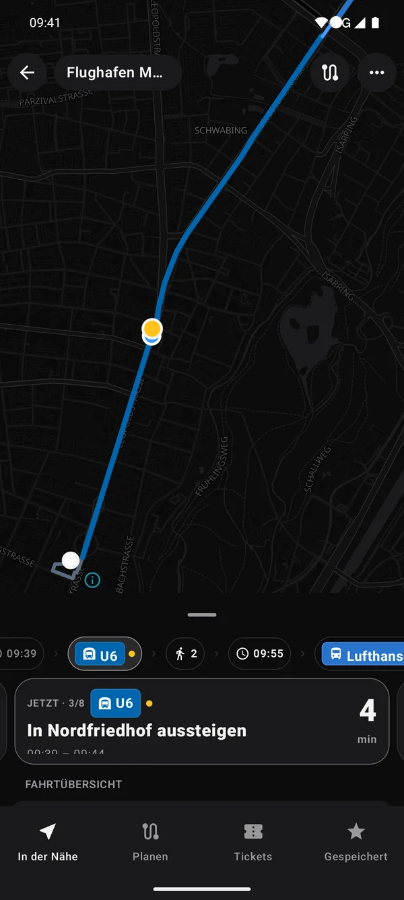
05
Füge Tickets aus einem PDF, Foto oder Screenshot hinzu. Publit liest die Angaben auf deinem iPhone aus und lädt dabei nichts hoch. Bei der Kontrolle ist der Code sofort da.
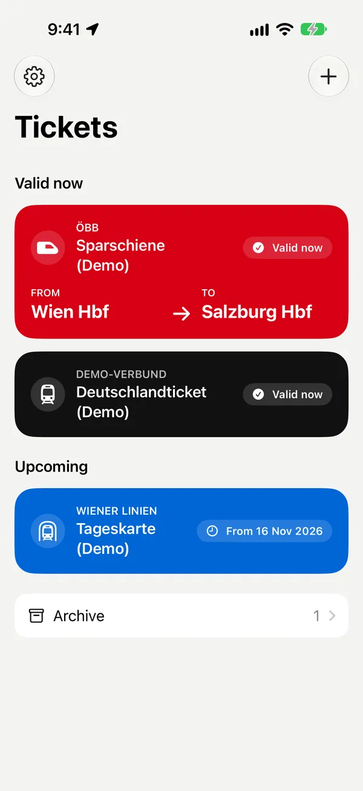
06
Die Apple-Watch-App zeigt die Abfahrten in der Nähe und begleitet dich durch die Fahrt: welche Linie, wie lange noch, wo du aussteigst. Ein Tippen aufs Handgelenk erinnert dich ans Aussteigen.
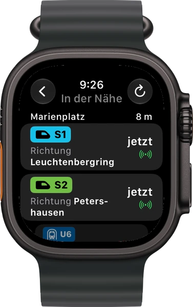
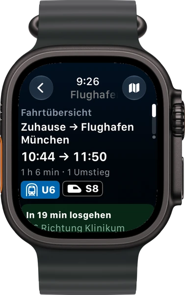
Abdeckung
Publit fährt überall, wo Transitous offene Fahrpläne hat, von der U-Bahn in München bis zum Vaporetto in Venedig. Die Karte zeigt, wo das heute ist: grün mit Echtzeit, grau nur mit Fahrplan. Sie aktualisiert sich jede Woche selbst. Tippe auf ein Land für Details.
Jede Woche neu berechnet aus allen Quellen von Transitous. Alle Angaben ohne Gewähr.
Genaue Karte aller Länder und Regionen →Für Verkehrsunternehmen, Verbünde, Bahn- und Busgesellschaften
Publit vermittelt Ihr Ticket direkt an der geplanten Verbindung, an Fahrgäste aus ganz Europa. Sie bleiben Anbieter und bestimmen Tarife und Preise, der Fahrgast zahlt den normalen Preis. Publit erhält eine Provision pro verkauftem Ticket.
Entwickelt in Europa, für Europa. Fahrplandaten aus offenen europäischen Quellen, ohne Umweg über große Plattformen.
Kein Konto, kein Tracking, keine Analyse-SDKs. Deine Orte, Fahrten und Tickets bleiben auf deinem Gerät.
Gegründet und entwickelt von Elija Friedrich-Ulrich in Wien, nicht von einem Konzern. Keine Werbung, kein Datenhandel.
Publit nutzt offene Fahrpläne (GTFS) und Live-Daten (GTFS-RT) über Transitous. Der ganze Code liegt offen auf GitHub.
Öffnen und losfahren. Das Wichtigste steht groß da, alles andere ist einen Tipp entfernt.
Publit bewertet jeden Umstieg: Wie sicher klappt er, wie lange wartest und gehst du? So gewinnt die Route, die sich am kürzesten anfühlt.

Publit entsteht in Wien. Elija Friedrich-Ulrich hat Publit gegründet und entwickelt die Apps für iPhone, Apple Watch und Android. Was als Nächstes kommt, entscheidet die Community mit, über die Wunschliste auf dieser Seite.
„In Wien brauchst du eine App, in München die nächste und für den Zug nach Venedig eine dritte. Ich will, dass eine reicht.“
Elija Friedrich-Ulrich, Gründer
Fotos: Christoph Grossberger, Gross Digital
Schlag eine Funktion vor oder stimm für Wünsche anderer. Ohne Anmeldung.
Publit hat keine Werbung und kein Tracking. Ab 1,50 € im Monat hilfst du, Server und Entwicklung zu bezahlen. Alle Funktionen bleiben für alle kostenlos.
Publit unterstützenPublit ist eine kostenlose Open-Source-App für Nah- und Fernverkehr in ganz Europa, für iPhone, Apple Watch und Android. Sie zeigt Abfahrten in der Nähe, plant Routen mit Bus, Bim, U-Bahn und Zug über Ländergrenzen hinweg und begleitet dich bis zum Aussteigen.
Ja. Publit ist kostenlos, ohne Werbung und ohne Konto. Wer möchte, unterstützt das Projekt freiwillig ab 1,50 € im Monat; alle Funktionen bleiben für alle frei.
Überall, wo es offene Fahrplandaten gibt: Publit nutzt Transitous mit mehr als 1.000 Quellen in 49 Ländern, mit Schwerpunkt Europa. So funktioniert dieselbe App in Wien, München, Mailand oder Kopenhagen.
Noch nicht. Publit soll Tickets im Auftrag der Verkehrsunternehmen direkt an der gefundenen Verbindung verkaufen; das startet Schritt für Schritt. Eigene Tickets wie KlimaTicket oder Deutschlandticket kannst du schon heute ablegen und vorzeigen.
Publit gibt es für iPhone (ab iOS 17) und Apple Watch im App Store. Die Android-App ist als Download auf GitHub erhältlich und läuft im geschlossenen Test für Google Play.
Von Transitous, einem offenen, ehrenamtlich betriebenen Routing-Dienst. Dazu kommen Live-Daten einzelner Betreiber wie Wiener Linien, ÖBB oder search.ch.
Nein. Publit hat kein Konto, kein Tracking und keine Analyse-SDKs. Deine Orte, Fahrten und Tickets bleiben auf deinem Gerät.
Elija Friedrich-Ulrich in Wien, als unabhängiges Projekt. Der Code ist offen auf GitHub (AGPL-3.0), Wünsche sammelt die Community öffentlich auf publit.eu.
Ein Fehler in der App, eine Linie fehlt oder du hast eine Idee: Schreib eine Mail an den Support. Eine echte Person liest jede Nachricht.
support@publit.euFür Fehlerberichte mit Details geht auch ein Issue auf GitHub.
Sie möchten Tickets über Publit verkaufen, Ihre Fahrplandaten sichtbar machen oder über Publit berichten? Hier finden Sie die passenden Informationen und den direkten Kontakt.
Für iPhone und Apple Watch im App Store, für Android als Download. Ohne Konto, ohne Werbung.